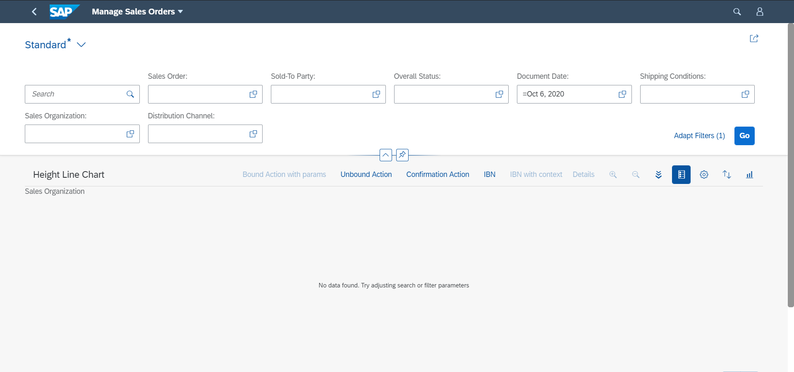

The following UI texts are displayed by default:
When no filters are applied and no data is found, a No data found message is shown.
When filters are applied and the search shows no results, the No data found. Try adjusting search or filter parameters message is shown.

You can override these two standard texts using the below keys in the i18n file:
NOITEMS_SMARTCHART
NOITEMS_SMARTCHART_WITH_FILTER
You can override the standard texts by adding these keys in the i18n file:
T_OP_TABLE_AND_CHART_NO_DATA_TEXT: Use this key to
add a text when no filters are applied and no data is found.
T_OP_TABLE_AND_CHART_NO_DATA_TEXT_WITH_FILTER: Use
this key to add a text when filters are applied and no data is
found.